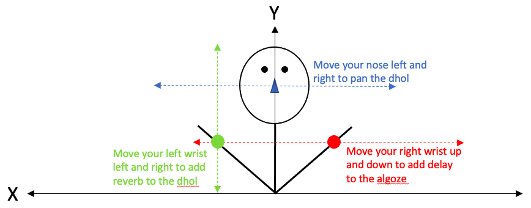

Created by Karen Mani (B.A. in Computer Science, Class of 2021) alongside Heather Stebbins (Professor in Electronic and Computer Music) at The George Washington University. This virtual installation is designed to introduce people to the Bhangra community. Using p5.js and Posenet, body movement is used to process sound in a meaningful and creative way.
How It Works

Enable camera access. Use the red dots on your nose and wrists as guiding points throughout the virtual installation (headphones are statistically proven to improve user experience by 1000%)
Use the left arrow on your keyboard or the dhol button on your screen to start the dhol loop. Move your nose left and right to move (pan) the sound respectively
Use your left wrist to add reverb to the dhol by bringing it into frame and moving it left (no reverb) and right (100% reverb)
Stop the dhol loop using your left arrow or the dhol button on your screen at any time
Use your right arrow or the alghoze button on your screen to start the alghoze loop. Bring your right wrist into frame and place it at the bottom to hear the alghoze with no delay. Slowly move your wrist higher until you eventually reach the top, where you’ll hear the max delay time impacting the alghoze
Stop the alghoze loop using your right arrow or the alghoze button on your screen at any time
Try playing around with the individual processes by clicking your spacebar or the Start All button to play all audio and using your nose and wrists to see how each process affects the parts of a song